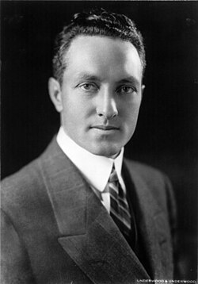

Richard E. Byrd
Naval officer and polar explorer, 1888 to 1957

A Navy officer and aviator from Winchester, Virginia, who received the Medal of Honor and claimed the first flights over both the North Pole, in 1926, and the South Pole, in 1929. The North Pole claim has long been doubted; his 1926 diary, released in 1996, shows erased sextant readings that differ from his official report. 1
He was officer in charge of Operation Highjump, the Navy's 1946–47 Antarctic expedition. In a March 1947 interview he warned that in a new war the United States could be attacked by planes flying over the poles. Writers later recast that warning as evidence of Nazi flying saucers, and made him the hero of a hollow-Earth story he never told. 1,2,3,4,5
Open in the interactive Watcher
Related
Sources
- Richard E. Byrd Wikipedia
- Operation Highjump Wikipedia
- Double Check: Operation Highjump (Christian Haag) Logically Facts
- Admiral Byrd and Nazi Cobblers Beachcombing's Bizarre History Blog, June 6, 2012
- The Hollow Earth (Raymond Bernard), catalog record CETAPS Repository, University of Porto, 1964